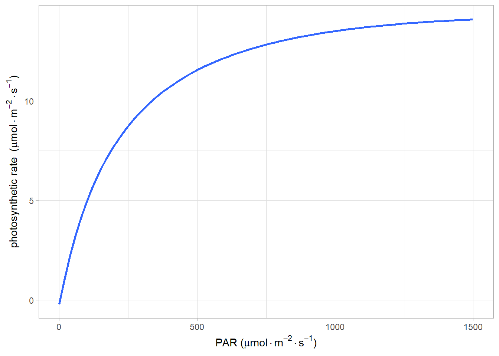

Code
library(minpack.lm)
# 读取数据，同fitaci数据格式
lrc <- read.csv("data/lrc.csv")
lrc <- subset(lrc, Obs > 0)
# 光响应曲线没有太多参数，
# 直接调出相应的光强和光合速率
# 方便后面调用
lrc_Q <- lrc$PARi
lrc_A <- lrc$Photo
# 模型的拟合
lrcnls <- nlsLM(lrc_A ~ alpha * ((1 -
beta*lrc_Q)/(1 + gamma * lrc_Q)) * lrc_Q - Rd,
start=list(alpha = 0.07, beta = 0.00005,
gamma=0.004, Rd = 0.2)
)
fitlrc_mrec <- summary(lrcnls)
# 饱和点计算
Isat <- (sqrt((fitlrc_mrec$coef[2,1] + fitlrc_mrec$coef[3,1])/
fitlrc_mrec$coef[2,1]) -1)/fitlrc_mrec$coef[3,1]
# 补偿点计算
Ic <- (
-(fitlrc_mrec$coef[3, 1] * fitlrc_mrec$coef[4, 1] -
fitlrc_mrec$coef[1, 1]) - sqrt((fitlrc_mrec$coef[3, 1] *
fitlrc_mrec$coef[4, 1] - fitlrc_mrec$coef[1, 1])^2-
(4 * fitlrc_mrec$coef[1, 1] * fitlrc_mrec$coef[2, 1] *
fitlrc_mrec$coef[4, 1])))/
(2*fitlrc_mrec$coef[1,1]*fitlrc_mrec$coef[2,1])
## 拟合图形
library(ggplot2)
light <- data.frame(lrc_Q = lrc$PARi, lrc_A = lrc$Photo)
mod_rec_form <- y ~
alpha * ((1 - beta*x)/(1 + gamma * x)) * x - Rd
ggplot(light, aes(x = lrc_Q, y = lrc_A)) +
geom_smooth(method="nls",
formula = mod_rec_form,
se = FALSE, method.args = list(
start = c(alpha = 0.07, beta = 0.00005,
gamma=0.004, Rd = 0.2),
aes(x =lrc_Q, y = lrc_A,
color='blue', size = 1.2))
)+
labs(y=expression(paste("photosynthetic rate ",
"(", mu, mol%.%m^-2%.%s^-1, ")")),
x=expression(paste("PAR ",
"(", mu, mol%.%m^-2%.%s^-1, ")")))+
theme_light()